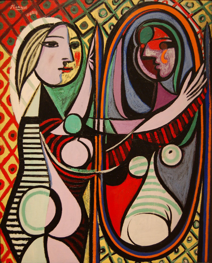

Toggle navigation
Cryptolalia
Home
Draw Guess
Text-detection
image
Fast Image Style
Arbitary Image Stylization
something
Github Repository
Fast Style Transfer
这是一个简单测试，使用CNN，在Google Colab上训练了权重，在Github上托管的网页，参考了Sketcher的实验
左边是原图，右边是风格转换后的图形，下方是五种风格模型.
Click Image to load its model
